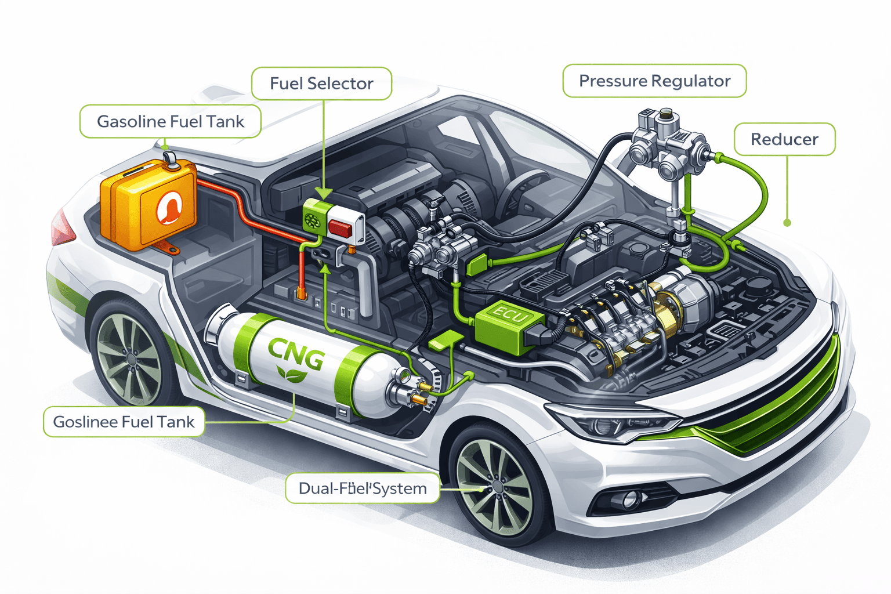
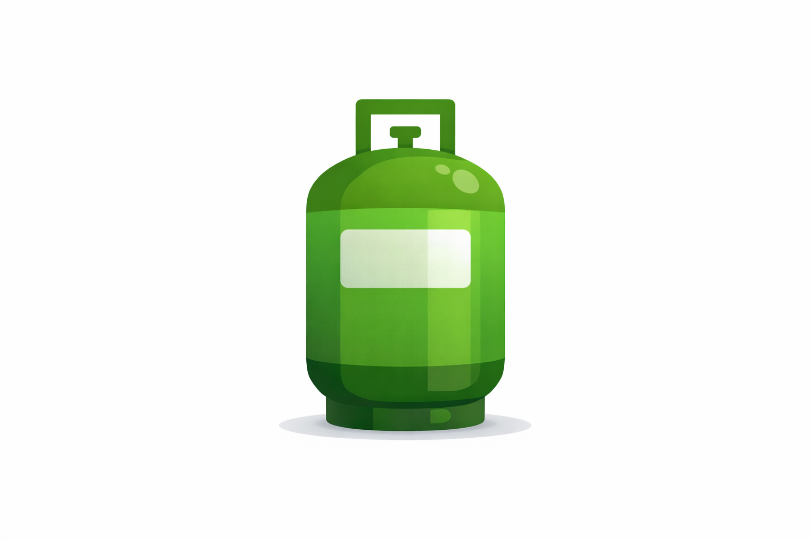

Step 1: Vehicle Inspection
A certified technician checks engine condition and compatibility with CNG systems.

Step 2: Install CNG Kit
Installation of cylinder, regulator, pipelines, and fuel injectors.
Step 3: Safety Testing
Leak testing and pressure checks are performed to ensure system safety.
Step 4: Performance Testing
Final testing ensures smooth switching between petrol and CNG modes.
Conversion Cost in Nigeria
The cost of converting a vehicle to CNG ranges between ₦200,000 – ₦400,000 depending on vehicle type and kit quality.
Requirements
- ✔ Certified conversion center
- ✔ Approved CNG kit
- ✔ Regular maintenance plan
- ✔ Access to CNG stations
Time Required
Conversion typically takes 4–8 hours depending on the vehicle.